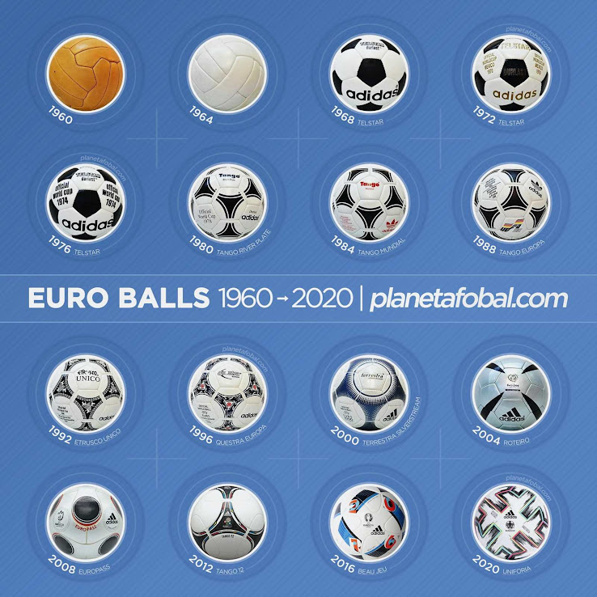

World Cup
The FIFA World Cup is the premier event in World Football, FIFA have proactively developed all parts of the game, including innovations in the match ball design. Over the years we have seen more and more technology being introduced to the ball design, giving it better weather resistance and better performance. Adidas have been the official ball designer since the 1970s. Here are the design of world cup balls.

EURO
The UEFA European Football Championship, less formally the European Championship and informally the Euros, is the primary association football tournament organized by the Union of European Football Associations (UEFA). The competition is contested by UEFA members senior men's national teams, determining the continental champion of Europe. The competition has been held every four years since 1960.Follwing are the different design used in European Championship throughout the years

Uefa Champions League
The UEFA Champions League came about as a new version of the European Cup and was played for the first time in the 1992-1993 season. Already established as the most prestigious club tournament in football, Champions League has become even more popular with the introduction of a mini-league group stage system. The new concept had a resemblance to the FIFA World Cup with an early phase of group play followed by a knockout phase. On several occasions has the competition expanded to include more clubs – the initial 8 have become 32 (qualification stage excluded).
Domestic Leagues
Football is played in more than 200 countries around the world.Every country has their own domestic football league. And every league has their own match balls as an identity. Here are the Europe top 5 leagues and their official match balls.
1. Premier League
The competition was founded as the FA Premier League on 20 February 1992 following the decision of clubs in the Football League First Division to break away from the Football League, founded in 1888, and take advantage of a lucrative television rights sale to Sky. It is the top level of English football league system. Contested by 20 clubs, it operates on a system of promotion and relegation with the English Football League (EFL).

2. La Liga
The Campeonato Nacional de Liga de Primera División, commonly known simply as Primera División in Spain, and as La Liga in English-speaking countries and officially as LaLiga Santander for sponsorship reasons, stylized as LaLiga, is the men's top professional football division of the Spanish football league system. Administered by the Liga Nacional de Fútbol Profesional, it is contested by 20 teams, with the three lowest-placed teams at the end of each season being relegated to the Segunda División and replaced by the top two teams and a play-off winner in that division.
3. Serie A

Serie A also called Serie A TIM for sponsorship reasons, is a professional league competition for football clubs located at the top of the Italian football league system. It has been operating as a round-robin tournament for over ninety years since the 1929–30 season. Serie A is regarded as one of the best football leagues in the world and it is often depicted as the most tactical and defensively sound national league.
4. Bundesliga

The Bundesliga sometimes referred to as the Fußball-Bundesliga. Bundesliga is a professional association football league in Germany. At the top of the German football league system, the Bundesliga is Germany's primary football competition. The Bundesliga comprises 18 teams and operates on a system of promotion and relegation with the 2.
5. Ligue 1

Ligue 1 officially known as Ligue 1 Uber Eats for sponsorship reasons, is a French professional league for men's association football clubs. At the top of the French football league system, it is the country's primary football competition. Administrated by the Ligue de Football Professionnel, Ligue 1 is contested by 20 clubs and operates on a system of promotion and relegation from and to Ligue 2.